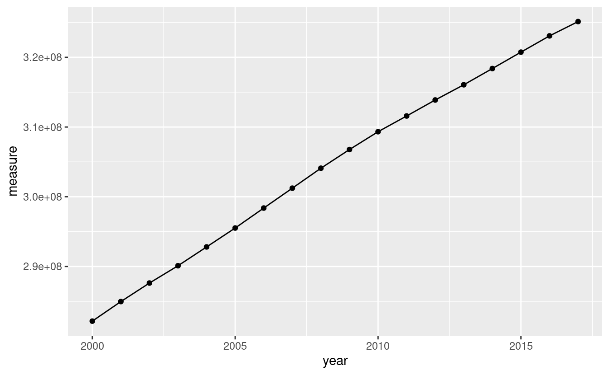

S05E03: R4DS (2e) - Ch. 6 - Tidy Data 2
Today, we will revisit tidy data, review pivot_longer() and learn pivot_wider().
 Illustrations from the Openscapes blog Tidy Data for reproducibility, efficiency, and collaboration by Julia Lowndes and Allison Horst
Illustrations from the Openscapes blog Tidy Data for reproducibility, efficiency, and collaboration by Julia Lowndes and Allison Horst
Introduction
Today we will continue learning about a consistent way to organize your data in R, using a system called “tidy” data.
Last week we went over pivot_longer(), and today we are going to:
- refresh on tidy data
- refresh on
pivot_longer() - learn
pivot_wider()
If you want to download the R script that goes along with today’s code club you can do so with the following code:
# save the url location for today's script
todays_R_script <- 'https://github.com/biodash/biodash.github.io/raw/master/content/codeclub/S05E03/r4ds_tidying2.R'
# go get that file!
download.file(url = todays_R_script,
destfile = "r4ds_tidying2.R")
The file will be downloaded to your working directory. If you don’t know where that is, you can find out by executing getwd() in your console.
We will again be using tools embedded within the tidyverse package, so we need to load it before we can use it. We do that with the library() function.
# you should have the tidyverse installed, but if not, do so using:
# install.packages("tidyverse")
# load the tidyverse
library(tidyverse)What is tidy data?
Let’s briefly go over again the idea of tidy data.

(Illustrations from the Openscapes blog Tidy Data for reproducibility, efficiency, and collaboration by Julia Lowndes and Allison Horst.)
This is easier to “see” 👀 than to explain. Here is an example of non-tidy data, where there is data embedded in column names, and one variable (the rank of a song) is spread across many columns:
billboard
#> # A tibble: 317 × 79
#> artist track date.ent…¹ wk1 wk2 wk3 wk4 wk5 wk6 wk7 wk8 wk9
#> <chr> <chr> <date> <dbl> <dbl> <dbl> <dbl> <dbl> <dbl> <dbl> <dbl> <dbl>
#> 1 2 Pac Baby… 2000-02-26 87 82 72 77 87 94 99 NA NA
#> 2 2Ge+h… The … 2000-09-02 91 87 92 NA NA NA NA NA NA
#> 3 3 Doo… Kryp… 2000-04-08 81 70 68 67 66 57 54 53 51
#> 4 3 Doo… Loser 2000-10-21 76 76 72 69 67 65 55 59 62
#> 5 504 B… Wobb… 2000-04-15 57 34 25 17 17 31 36 49 53
#> 6 98^0 Give… 2000-08-19 51 39 34 26 26 19 2 2 3
#> 7 A*Tee… Danc… 2000-07-08 97 97 96 95 100 NA NA NA NA
#> 8 Aaliy… I Do… 2000-01-29 84 62 51 41 38 35 35 38 38
#> 9 Aaliy… Try … 2000-03-18 59 53 38 28 21 18 16 14 12
#> 10 Adams… Open… 2000-08-26 76 76 74 69 68 67 61 58 57
#> # … with 307 more rows, 67 more variables: wk10 <dbl>, wk11 <dbl>, wk12 <dbl>,
#> # wk13 <dbl>, wk14 <dbl>, wk15 <dbl>, wk16 <dbl>, wk17 <dbl>, wk18 <dbl>,
#> # wk19 <dbl>, wk20 <dbl>, wk21 <dbl>, wk22 <dbl>, wk23 <dbl>, wk24 <dbl>,
#> # wk25 <dbl>, wk26 <dbl>, wk27 <dbl>, wk28 <dbl>, wk29 <dbl>, wk30 <dbl>,
#> # wk31 <dbl>, wk32 <dbl>, wk33 <dbl>, wk34 <dbl>, wk35 <dbl>, wk36 <dbl>,
#> # wk37 <dbl>, wk38 <dbl>, wk39 <dbl>, wk40 <dbl>, wk41 <dbl>, wk42 <dbl>,
#> # wk43 <dbl>, wk44 <dbl>, wk45 <dbl>, wk46 <dbl>, wk47 <dbl>, wk48 <dbl>, …Here is an example of the same exact data, in a tidy format, where those data that used to be column names, are now values coded for a particular variable.
#> # A tibble: 24,092 × 5
#> artist track date.entered week rank
#> <chr> <chr> <date> <chr> <dbl>
#> 1 2 Pac Baby Don't Cry (Keep... 2000-02-26 wk1 87
#> 2 2 Pac Baby Don't Cry (Keep... 2000-02-26 wk2 82
#> 3 2 Pac Baby Don't Cry (Keep... 2000-02-26 wk3 72
#> 4 2 Pac Baby Don't Cry (Keep... 2000-02-26 wk4 77
#> 5 2 Pac Baby Don't Cry (Keep... 2000-02-26 wk5 87
#> 6 2 Pac Baby Don't Cry (Keep... 2000-02-26 wk6 94
#> 7 2 Pac Baby Don't Cry (Keep... 2000-02-26 wk7 99
#> 8 2 Pac Baby Don't Cry (Keep... 2000-02-26 wk8 NA
#> 9 2 Pac Baby Don't Cry (Keep... 2000-02-26 wk9 NA
#> 10 2 Pac Baby Don't Cry (Keep... 2000-02-26 wk10 NA
#> # … with 24,082 more rowsWhy should you care?
Let’s go through an example where we will learn that we can’t make the visualization that we want, because our data is not in tidy format.
# look at world_bank_pop using head
head(world_bank_pop)
#> # A tibble: 6 × 20
#> country indic…¹ `2000` `2001` `2002` `2003` `2004` `2005` `2006` `2007`
#> <chr> <chr> <dbl> <dbl> <dbl> <dbl> <dbl> <dbl> <dbl> <dbl>
#> 1 ABW SP.URB… 4.16e4 4.20e+4 4.22e+4 4.23e+4 4.23e+4 4.24e+4 4.26e+4 4.27e+4
#> 2 ABW SP.URB… 1.66e0 9.56e-1 4.01e-1 1.97e-1 9.46e-2 1.94e-1 3.67e-1 4.08e-1
#> 3 ABW SP.POP… 8.91e4 9.07e+4 9.18e+4 9.27e+4 9.35e+4 9.45e+4 9.56e+4 9.68e+4
#> 4 ABW SP.POP… 2.54e0 1.77e+0 1.19e+0 9.97e-1 9.01e-1 1.00e+0 1.18e+0 1.23e+0
#> 5 AFE SP.URB… 1.16e8 1.20e+8 1.24e+8 1.29e+8 1.34e+8 1.39e+8 1.44e+8 1.49e+8
#> 6 AFE SP.URB… 3.60e0 3.66e+0 3.72e+0 3.71e+0 3.74e+0 3.81e+0 3.81e+0 3.61e+0
#> # … with 10 more variables: `2008` <dbl>, `2009` <dbl>, `2010` <dbl>,
#> # `2011` <dbl>, `2012` <dbl>, `2013` <dbl>, `2014` <dbl>, `2015` <dbl>,
#> # `2016` <dbl>, `2017` <dbl>, and abbreviated variable name ¹​indicatorWhat if we want to make a plot to see how population has changed (y-axis) for a specific country (say, the USA) over the duration for which data is collected (x-axis)? With the data in this format, we cannot make this plot, at least not with ggplot2. This is because year is not a column in our dataframe. This population information is spread over all of the columns that have a year as their name.
We can fix this by using pivot_longer().
world_bank_pop_tidy <- world_bank_pop |>
pivot_longer(cols = !c(country, indicator), # which columns do we want to "pivot"
names_to = "year", # where should the column names go
values_to = "measure") # where should the values within each cell go
# check how this went
head(world_bank_pop_tidy)
#> # A tibble: 6 × 4
#> country indicator year measure
#> <chr> <chr> <chr> <dbl>
#> 1 ABW SP.URB.TOTL 2000 41625
#> 2 ABW SP.URB.TOTL 2001 42025
#> 3 ABW SP.URB.TOTL 2002 42194
#> 4 ABW SP.URB.TOTL 2003 42277
#> 5 ABW SP.URB.TOTL 2004 42317
#> 6 ABW SP.URB.TOTL 2005 42399# convert year from a character to a number so we can plot it
world_bank_pop_tidy <- world_bank_pop_tidy |>
mutate(year = as.numeric(year))
# check again
head(world_bank_pop_tidy)
#> # A tibble: 6 × 4
#> country indicator year measure
#> <chr> <chr> <dbl> <dbl>
#> 1 ABW SP.URB.TOTL 2000 41625
#> 2 ABW SP.URB.TOTL 2001 42025
#> 3 ABW SP.URB.TOTL 2002 42194
#> 4 ABW SP.URB.TOTL 2003 42277
#> 5 ABW SP.URB.TOTL 2004 42317
#> 6 ABW SP.URB.TOTL 2005 42399Now we can make the plot we want. If you’re not familiar with ggplot syntax you can learn more in the R4DS section called Visualize or in past code clubs on:
# a minimal plot
world_bank_pop_tidy |>
filter(country == "USA") |>
filter(indicator == "SP.POP.TOTL") |>
ggplot(aes(x = year, y = measure)) +
geom_point() +
geom_line()

If you want to see a more polished version of this plot (click here)
# a more polished plot
world_bank_pop_tidy |>
filter(country == "USA") |>
filter(indicator == "SP.POP.TOTL") |>
ggplot(aes(x = year, y = measure, color = country)) +
geom_point() +
geom_line() +
scale_y_continuous(limits = c(0, 4e8)) +
# ylim(c(0, 4e8)) + # also works instead of scale_y_continuous
theme_minimal() +
theme(legend.position = "none") +
labs(x = "Year",
y = "Population",
title = "Total population in the United States \nfrom 2000 to 2017",
caption = "Data from the World Bank")
Often it may be easier to collect your data in wide format, but analyze it in tidy (i.e., long) format.
This does not mean you must now collect your data in tidy format! You simply need to become comfortable with switching between formats.
Two functions for pivoting data
pivot_longer() pulls data that is embedded in column names, and reshapes your dataframe such this information is now embedded within the values. Or put differently, it collects variables that are spread across multiple columns into a single column. This makes your dataframes longer, i.e., increases the number of rows. Typically, we use pivot_longer() to make an untidy dataset tidy.
pivot_wider() takes data that is embedded in the values of your dataframe, and puts this information in variable names. Or put differently, it spreads a variable across multiple columns. This makes your dataframe “wider”, i.e., increases the number of columns. Typically, pivot_wider() will make a dataset untidy. This can be useful for certain calculations, or if you want to use a for loop to do something iteratively across columns.
pivot_wider()
The opposite of pivot_longer() is pivot_wider(). We haven’t used pivot_wider() get so let’s try it. We are going to use the dataframe population which is pre-loaded with the tidyverse. This dataframe is currently in tidy format.
# what is in population?
head(population)
#> # A tibble: 6 × 3
#> country year population
#> <chr> <dbl> <dbl>
#> 1 Afghanistan 1995 17586073
#> 2 Afghanistan 1996 18415307
#> 3 Afghanistan 1997 19021226
#> 4 Afghanistan 1998 19496836
#> 5 Afghanistan 1999 19987071
#> 6 Afghanistan 2000 20595360What if we wanted to adjust the data so that instead of having a column called year, the data for each year is its own column, and have the corresponding population within each cell ? We can do that with pivot_wider().
population_wide <- population |>
pivot_wider(names_from = "year",
values_from = "population")
head(population_wide)
#> # A tibble: 6 × 20
#> country `1995` `1996` `1997` `1998` `1999` `2000` `2001` `2002` `2003` `2004`
#> <chr> <dbl> <dbl> <dbl> <dbl> <dbl> <dbl> <dbl> <dbl> <dbl> <dbl>
#> 1 Afghani… 1.76e7 1.84e7 1.90e7 1.95e7 2.00e7 2.06e7 2.13e7 2.22e7 2.31e7 2.40e7
#> 2 Albania 3.36e6 3.34e6 3.33e6 3.33e6 3.32e6 3.30e6 3.29e6 3.26e6 3.24e6 3.22e6
#> 3 Algeria 2.93e7 2.98e7 3.03e7 3.08e7 3.13e7 3.17e7 3.22e7 3.26e7 3.30e7 3.35e7
#> 4 America… 5.29e4 5.39e4 5.49e4 5.59e4 5.68e4 5.75e4 5.82e4 5.87e4 5.91e4 5.93e4
#> 5 Andorra 6.39e4 6.43e4 6.41e4 6.38e4 6.41e4 6.54e4 6.8 e4 7.16e4 7.56e4 7.91e4
#> 6 Angola 1.21e7 1.25e7 1.28e7 1.31e7 1.35e7 1.39e7 1.44e7 1.49e7 1.54e7 1.60e7
#> # … with 9 more variables: `2005` <dbl>, `2006` <dbl>, `2007` <dbl>,
#> # `2008` <dbl>, `2009` <dbl>, `2010` <dbl>, `2011` <dbl>, `2012` <dbl>,
#> # `2013` <dbl>pivot_longer()
Let’s practice using pivot_longer() again. We just made a wide dataframe with pivot_wider() – can we make it long again?
population_long <- population_wide |>
pivot_longer(cols = !country, # all columns except country
names_to = "year",
values_to = "population")
head(population_long)
#> # A tibble: 6 × 3
#> country year population
#> <chr> <chr> <dbl>
#> 1 Afghanistan 1995 17586073
#> 2 Afghanistan 1996 18415307
#> 3 Afghanistan 1997 19021226
#> 4 Afghanistan 1998 19496836
#> 5 Afghanistan 1999 19987071
#> 6 Afghanistan 2000 20595360There are many different ways you can code to tell R which columns you want to pivot. I’m showing below some other ways to code the same outcome, but you can find a more ocomprehensive list of tidy-select helpers in the tidyr documentation page.
population_long <- population_wide |>
pivot_longer(cols = where(is.numeric), # all numeric columns
names_to = "year",
values_to = "population")
head(population_long)
#> # A tibble: 6 × 3
#> country year population
#> <chr> <chr> <dbl>
#> 1 Afghanistan 1995 17586073
#> 2 Afghanistan 1996 18415307
#> 3 Afghanistan 1997 19021226
#> 4 Afghanistan 1998 19496836
#> 5 Afghanistan 1999 19987071
#> 6 Afghanistan 2000 20595360population_long <- population_wide |>
pivot_longer(cols = 2:20, # columns 2 through 20
names_to = "year",
values_to = "population")
head(population_long)
#> # A tibble: 6 × 3
#> country year population
#> <chr> <chr> <dbl>
#> 1 Afghanistan 1995 17586073
#> 2 Afghanistan 1996 18415307
#> 3 Afghanistan 1997 19021226
#> 4 Afghanistan 1998 19496836
#> 5 Afghanistan 1999 19987071
#> 6 Afghanistan 2000 20595360Breakout Rooms
We are going to use a dataset that is a part of the #TidyTuesday series of data activities for tidyverse/R learning. I’ve picked some data that comes from the American Kennel Club and was compiled by KKakey.
This dataset contains the popularity of dog breeds by AKC registration from 2013-2020. You can directly read this data into a dataframe using:
breed_rank_all <- readr::read_csv('https://raw.githubusercontent.com/rfordatascience/tidytuesday/master/data/2022/2022-02-01/breed_rank.csv')Let’s take a look at the data:
breed_rank_all
#> # A tibble: 195 × 11
#> Breed 2013 …¹ 2014 …² 2015 …³ 2016 …ⴠ2017 …ⵠ2018 …ⶠ2019 …ⷠ2020 …⸠links
#> <chr> <dbl> <dbl> <dbl> <dbl> <dbl> <dbl> <dbl> <dbl> <chr>
#> 1 Retrie… 1 1 1 1 1 1 1 1 http…
#> 2 French… 11 9 6 6 4 4 4 2 http…
#> 3 German… 2 2 2 2 2 2 2 3 http…
#> 4 Retrie… 3 3 3 3 3 3 3 4 http…
#> 5 Bulldo… 5 4 4 4 5 5 5 5 http…
#> 6 Poodles 8 7 8 7 7 7 6 6 http…
#> 7 Beagles 4 5 5 5 6 6 7 7 http…
#> 8 Rottwe… 9 10 9 8 8 8 8 8 http…
#> 9 Pointe… 13 12 11 11 10 9 9 9 http…
#> 10 Dachsh… 10 11 13 13 13 12 11 10 http…
#> # … with 185 more rows, 1 more variable: Image <chr>, and abbreviated variable
#> # names ¹​`2013 Rank`, ²​`2014 Rank`, ³​`2015 Rank`, ⁴​`2016 Rank`, ⁵​`2017 Rank`,
#> # ⁶​`2018 Rank`, ⁷​`2019 Rank`, ⁸​`2020 Rank`Exercise 1
Convert the breed_rank_all dataframe from its current wide, untidy format, to a tidy, long format.
Bonus: Make sure the year column only contains the year number itself.
Hint(click here)
-
Use the function
pivot_longer(). Try setting the argumentscols =,names_to =andvalues_to =. -
You’ll want to pivot the columns with years in them.
Hint for bonus (click here)
Note that the values in your resulting column with years are “<year> Rank” (e.g., 2020 Rank), and not just “<year>” (e.g., 2020).
You can fix this using either:
-
A
mutate()step after pivoting, similar to the example above – but usingparse_number()instead ofas.numeric(), since some alphabetic characters have to be removed. -
Directly within your
pivot_longer()call, using thenames_transformargument. (Visit this link for some help on that.)
Solution (click here)
Initial step:
breed_rank_tidy <- breed_rank_all |>
pivot_longer(cols = contains("Rank"),
names_to = "year",
values_to = "rank")
head(breed_rank_tidy)
#> # A tibble: 6 × 5
#> Breed links Image year rank
#> <chr> <chr> <chr> <chr> <dbl>
#> 1 Retrievers (Labrador) https://www.akc.org/dog-breeds/labrad… http… 2013… 1
#> 2 Retrievers (Labrador) https://www.akc.org/dog-breeds/labrad… http… 2014… 1
#> 3 Retrievers (Labrador) https://www.akc.org/dog-breeds/labrad… http… 2015… 1
#> 4 Retrievers (Labrador) https://www.akc.org/dog-breeds/labrad… http… 2016… 1
#> 5 Retrievers (Labrador) https://www.akc.org/dog-breeds/labrad… http… 2017… 1
#> 6 Retrievers (Labrador) https://www.akc.org/dog-breeds/labrad… http… 2018… 1This leaves us with a suboptimal year column:
head(breed_rank_tidy$year)
#> [1] "2013 Rank" "2014 Rank" "2015 Rank" "2016 Rank" "2017 Rank" "2018 Rank"We can fix that as follows:
breed_rank_tidy <- breed_rank_tidy |>
mutate(year = parse_number(year))Alternatively, it’s possible to do this all at once using the names_transform argument of pivot_longer():
breed_rank_tidy <- breed_rank_all |>
pivot_longer(cols = contains("Rank"),
names_to = "year",
values_to = "rank",
names_transform = parse_number) # or: 'list(year = parse_number)'
breed_rank_tidy
#> # A tibble: 1,560 × 5
#> Breed links Image year rank
#> <chr> <chr> <chr> <dbl> <dbl>
#> 1 Retrievers (Labrador) https://www.akc.org/dog-breeds/labra… http… 2013 1
#> 2 Retrievers (Labrador) https://www.akc.org/dog-breeds/labra… http… 2014 1
#> 3 Retrievers (Labrador) https://www.akc.org/dog-breeds/labra… http… 2015 1
#> 4 Retrievers (Labrador) https://www.akc.org/dog-breeds/labra… http… 2016 1
#> 5 Retrievers (Labrador) https://www.akc.org/dog-breeds/labra… http… 2017 1
#> 6 Retrievers (Labrador) https://www.akc.org/dog-breeds/labra… http… 2018 1
#> 7 Retrievers (Labrador) https://www.akc.org/dog-breeds/labra… http… 2019 1
#> 8 Retrievers (Labrador) https://www.akc.org/dog-breeds/labra… http… 2020 1
#> 9 French Bulldogs https://www.akc.org/dog-breeds/frenc… http… 2013 11
#> 10 French Bulldogs https://www.akc.org/dog-breeds/frenc… http… 2014 9
#> # … with 1,550 more rowsExercise 2
Take that new dataframe you’ve just made using pivot_longer() and make it wide again. No, you can’t just use the original dataframe 😀🐶
Hints (click here)
Try using pivot_longer() and make sure you specify names_from = and values_from =.
Solution (click here)
breed_rank_wide <- breed_rank_tidy |>
pivot_wider(names_from = "year",
values_from = "rank")
head(breed_rank_wide)
#> # A tibble: 6 × 11
#> Breed links Image `2013` `2014` `2015` `2016` `2017` `2018` `2019` `2020`
#> <chr> <chr> <chr> <dbl> <dbl> <dbl> <dbl> <dbl> <dbl> <dbl> <dbl>
#> 1 Retriever… http… http… 1 1 1 1 1 1 1 1
#> 2 French Bu… http… http… 11 9 6 6 4 4 4 2
#> 3 German Sh… http… http… 2 2 2 2 2 2 2 3
#> 4 Retriever… http… http… 3 3 3 3 3 3 3 4
#> 5 Bulldogs http… http… 5 4 4 4 5 5 5 5
#> 6 Poodles http… http… 8 7 8 7 7 7 6 6Note, that R is adding all your new columns to the end of your dataframe. If you want to reorder your columns, you can do that simply with select() which both picks and orders columns. Note, you need backticks around a variable name when that variable name is a number (as this is atypical syntax for R).
breed_rank_wide <- breed_rank_wide |>
select(Breed, `2013`:`2020`, everything())
head(breed_rank_wide)
#> # A tibble: 6 × 11
#> Breed `2013` `2014` `2015` `2016` `2017` `2018` `2019` `2020` links Image
#> <chr> <dbl> <dbl> <dbl> <dbl> <dbl> <dbl> <dbl> <dbl> <chr> <chr>
#> 1 Retriever… 1 1 1 1 1 1 1 1 http… http…
#> 2 French Bu… 11 9 6 6 4 4 4 2 http… http…
#> 3 German Sh… 2 2 2 2 2 2 2 3 http… http…
#> 4 Retriever… 3 3 3 3 3 3 3 4 http… http…
#> 5 Bulldogs 5 4 4 4 5 5 5 5 http… http…
#> 6 Poodles 8 7 8 7 7 7 6 6 http… http…Bonus exercise
Try making a plot that shows the popularity rank of your favorite dog breeds (select up to a handful) over 2013-2020.
Hints (click here)
Use your tidy dataframe, filter() to pick the Breeds you want to keep, and maybe a combined point (geom_point()) and line (geom_line()) plot.
Solution (click here)
fav_breeds <- c("French Bulldogs", "Poodles")
breed_rank_tidy |>
filter(Breed %in% fav_breeds) |>
# filter(Breed == c("French Bulldogs", "Poodles")) |> # also works
ggplot(aes(x = year, y = rank, color = Breed)) +
geom_point() +
geom_line() +
labs(x = "Year",
y = "Rank (where 1 is the most popular)",
title = "AKC Popularity of Jess and Daniel's Favorite Dog Breeds",
caption = "Data from AKC/#TidyTuesday")